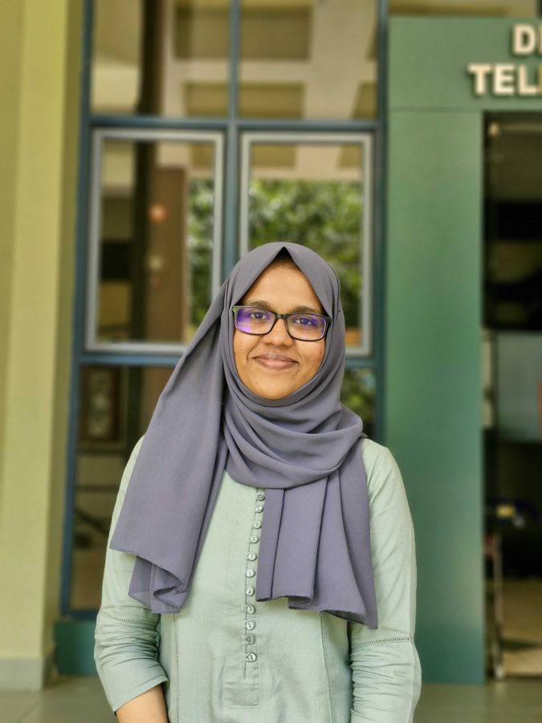

The University of Sydney
Visiting research student in HCI. Led an Australian Sign Language (Auslan) dataset and recognition study, and worked on IMU-based human motion prediction.
I’m a final-year undergraduate working at the intersection of machine learning, bio-signal processing and human–computer interaction. I care about technology that improves people’s well-being, especially in healthcare and accessibility.

Visiting research student in HCI. Led an Australian Sign Language (Auslan) dataset and recognition study, and worked on IMU-based human motion prediction.
Research intern on 3D domain generalisation for object detection in autonomous driving, using nuScenes and Argoverse 2.
Automatic 3D reconstruction and volumetry of the liver from a few partial ultrasound scans, extended to the kidney.
Human-centred computing, machine learning & AI, bio-signal processing, assistive technology
Python, C, C++, MATLAB
PyTorch, TensorFlow, Keras, scikit-learn
Altium Designer, SolidWorks, Multisim, Arduino, ESP32, Raspberry Pi, Jetson
English (bilingual), Tamil (native), Sinhala (working)
Git, Linux, VS Code